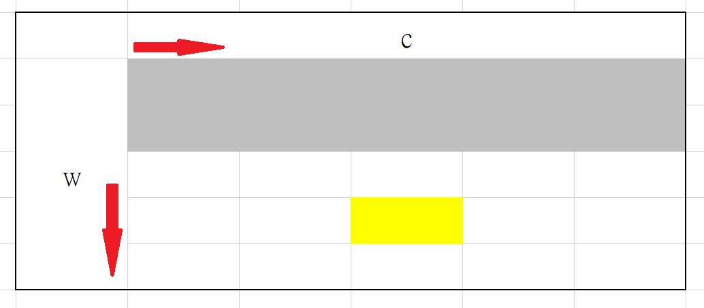
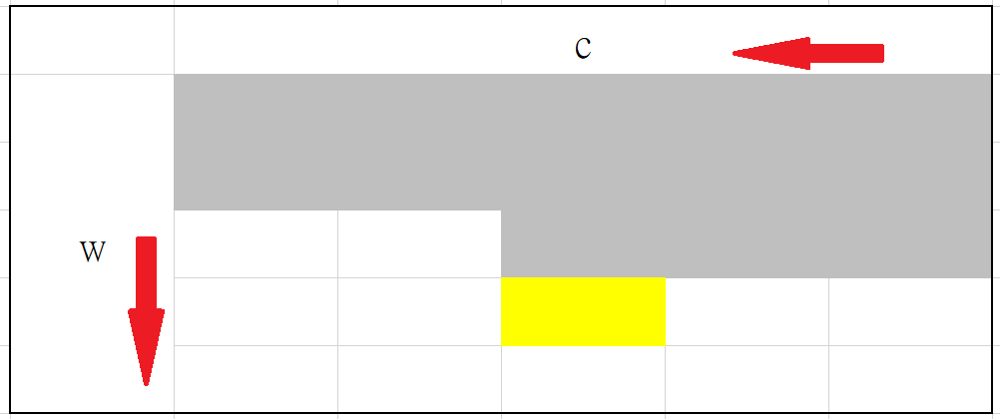

背包 DP (Knapsack DP)
0-1 背包問題
0-1 背包問題
給定 個物品的重量 和價值 ，和一個容量為 的背包。選取若干件物品放入背包，在不超過背包容量的情況下，背包內物品價值總和最大為何?
每種物品有兩個狀態不放與放，可對應二進位的 和 ，故稱為「0-1 背包問題」。
題目有三項資料，物品個數、物品重量、物品價值，利用這些資料設計出狀態式：
- 狀態： 代表前 樣物品在重量總和 的情況下，物品價值總和最大值。
- 初始狀態： 。
當算好 個物品的狀態，對於第 個物品有兩種選擇
- 不放：重量和價值不變 。
- 放：重量 ，價值 。
轉移式就由上面兩種選擇歸納出：
- 。
以下為利用二維陣列儲存答案的範例：
1 2 3 4 5 6 7 8 9 10 11 12 13 14 15 | |
滾動陣列
空間複雜度 ，採用「滾動陣列」，可以降低空間複雜度

由上圖可得知，當在計算 時，只會用到上一列的資料，因此我們的需要陣列大小降到 。
1 2 3 4 5 6 7 8 9 10 11 12 13 14 | |
再來，如果我們將 當中的 由大到小計算。

會發現計算 時， 也不會用到，可以將 覆蓋到 上面。我們可以再次縮小陣列，變成大小為 的一維陣列。
1 2 3 4 5 6 7 8 9 | |
滾動陣列
覆蓋不會用到的資訊，降低記憶體使用量。
0-1 背包問題時間複雜度 ，空間複雜度 。
UVa 10664 - Luggage
給定 樣物品，每件物品的重量為 ，問可不可以將物品分成等重的兩堆。
需要用 stringstream 處裡輸入。
假設總重 ，如果 為奇數無解，否則用 0/1 背包 DP 判斷是否可以拿總重 的物品。
AtCoder Educational DP Contest E - Knapsack 2
承 0/1 背包 DP， 範圍在 。
原本的狀態式會超過時間限制，用價值取代重量當作狀態，再間接取得答案。
- 狀態： 代表前 樣物品在價值總和為 的情況下，重量總和最小值。
- 初始狀態： 。
- 轉移：
最後找出：
技巧：表示(負)無限大
(負)無限大只要設成一個比最大(小)答案還要大(小)的值就行了。
UVa 10616 - Divisible Group Sums
給定 個數字，求取 個數字總和為 的倍數的方法數。
先將所有數字對 取餘數(負數 ：)。
- 狀態： 前 個數字取 個數字 的方法數。
- 答案
無限背包問題
無限背包問題
給定 種物品的重量 和價值 ，和一個容量為 的背包。每種物品可選取任意個放入背包，在不超過背包容量的情況下，背包內物品價值總和最大為何?
無限背包問題和 0-1 背包問題的狀態式相同，以下為轉移式：
可以簡化成：
- 。
- 。
為什麼可以這樣優化？是因為當 當中的 由小到大計算時， 已被 更新過，那麼 就是選擇第 種物品數次的最佳結果。
換言之，我們通過局部最優子結構的性質重複使用了之前的枚舉過程，優化了枚舉的複雜度。(from 背包 DP - OI Wiki )
下面為範例程式碼，一樣有用到滾動陣列的技巧：
1 2 3 4 5 6 7 8 9 | |
無限背包問題時間複雜度 ，空間複雜度 。
UVa 00674 - Coin Change
有 五種硬幣，有多少種方法湊出 元?
- 狀態： 前 種硬幣才能湊出 元的方法數
- 初始狀態：
- 轉移：
1 2 3 4 5 6 7 8 9 10 11 12 13 14 15 16 17 | |
UVa 12955 - Factorial
給定一個數字 ，最少可以使用幾個 的和表示?
和 UVa 00674 - Coin Change 相似，幣值改成 。
二維背包問題
限制變為兩項。
HDU - 2159 FATE
打怪遊戲，每種怪物有忍耐度 和經驗值 ，給定數量和忍耐度限制，是否可以獲得至少 經驗值?
- 狀態：：在前 種怪物選 隻攻擊，忍耐度 的情況下的最大經驗值。
- 初始狀態：
- 轉移：
OpenJ_Bailian 1948 - Triangular Pastures
給定 根棍子，第 根棍子長度為 ，問 根棍子組成最大三角形面積為何(每根棍子都要用到)?
先用動態規劃找出所有可能。
- 狀態： 前 根棍子是否可以形成第一條邊長為 ，第二條邊長為 的情況。
- boolean 函數
- 初始狀態：。
- 轉移式子：。
- 試著把第 根棍子放到第一條邊或第二條邊。
枚舉三邊長 ，邊長最大為棍子和 ，檢查是否有解，如果有解更新最大面積。
例題練習
- 0-1 背包問題
- 無限背包問題